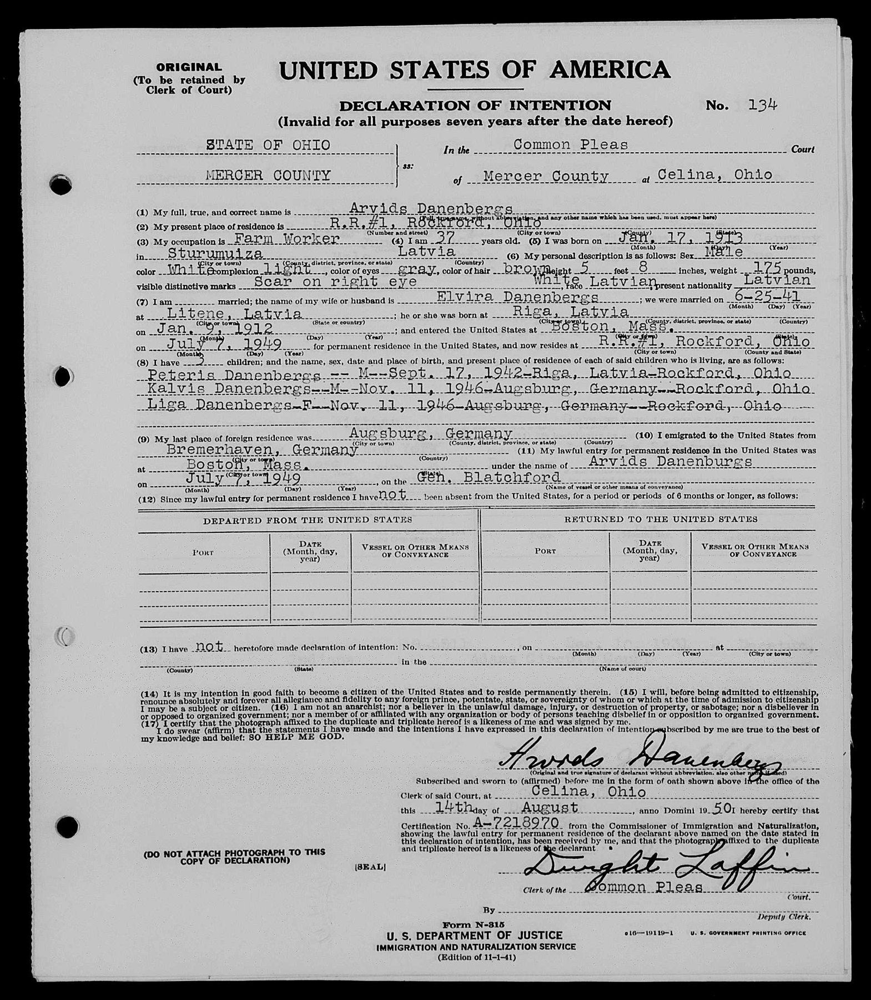
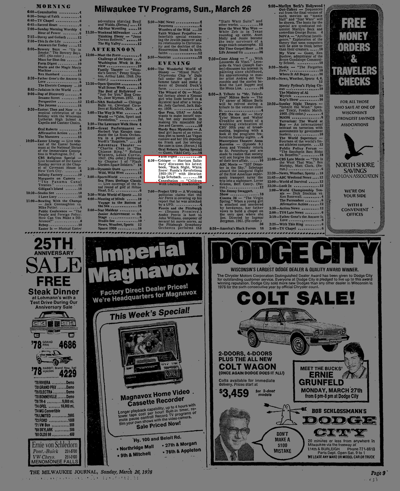
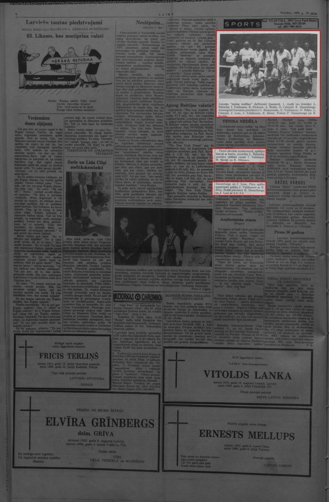
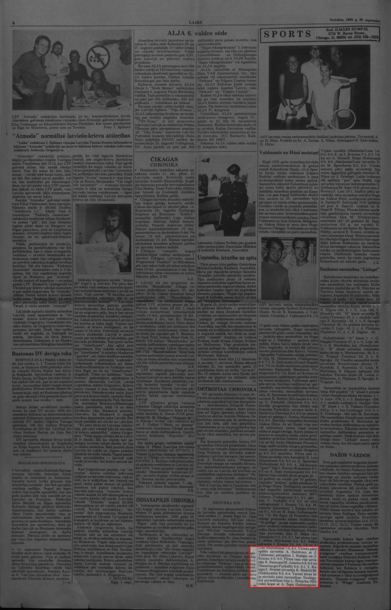
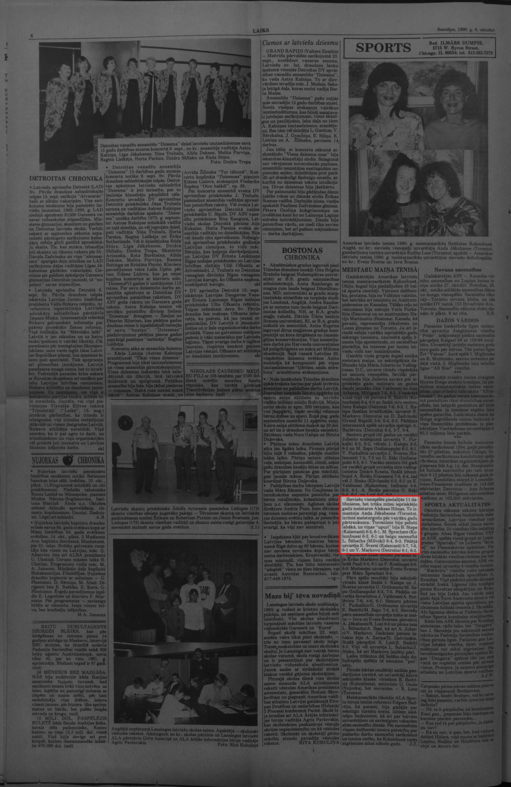
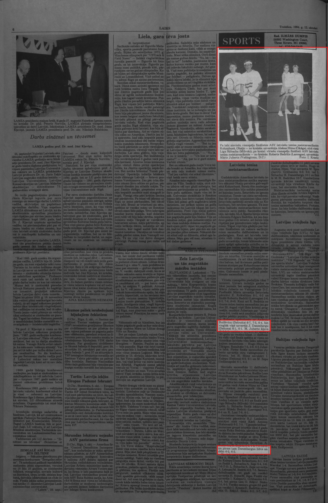
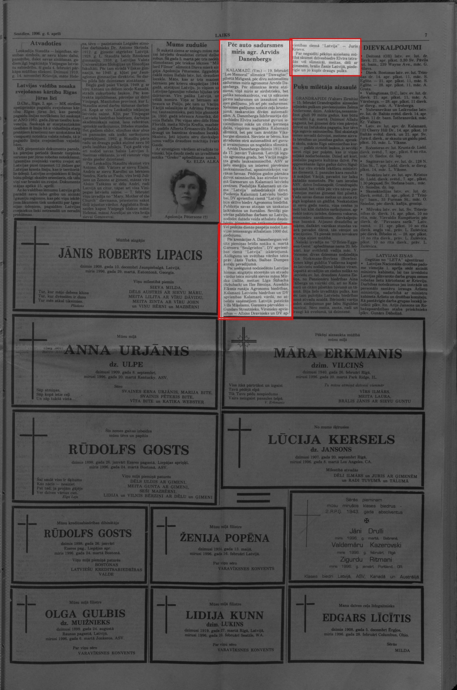

Liga Danenberg b. 1946
Peter's aunt.
Living. As for every living relative on this site, the birth date is given by year only, and no current address is shown.
Also recorded as Līga Šūbacha (Schubach); Liga Danenberg (married name Schubach).
Liga Danenberg was born in 1946 in Haunstetten DP camp, Augsburg, Bavaria, Germany3,4, the daughter of Arvīds Fricis Danenbergs and Elvīra Antonija Sirlaka4,30,31,32,33. She married Wolf Schubach between 1968 and 1969 in United States34. She arrived at Boston, Massachusetts, United States on 7 Jul 194914.
Family
- Parents
- Arvīds Fricis Danenbergs 1913–1996 and Elvīra Antonija Sirlaka 1912–2011 documented
- Husband
- Wolf Schubach 1944–2019 · married between 1968 and 1969 in United States34
Life events
| Event | Date | Place and details |
|---|---|---|
| Born | 1946 | Haunstetten DP camp, Augsburg, Bavaria, Germany3,4 |
| Arrived | 7 Jul 1949 | Boston, Massachusetts, United States14 |
| Lived | 13 Jul 1949 | Liberty Township, Mercer County, Ohio, United States5,6 |
| Lived | bet 1951 and 1965 | Tiffin, Ohio, United States7 |
| Note | Jul 1964 | Kalamazoo, Michigan, United States First name in the caption of the same group photograph, "1. rindā no kreisās Līga Dannenberga" (front row, first from the left; the front row at the left end shows a young woman). The sweep recorded only Kalvis from this caption; Līga is the second family member in it. Page spelling Dannenberga. I…15 |
| Religion | 8 Jul 1964 | Kalamazoo, Michigan, United States Same caption: "1. rindā no kreisās Līga Dannenberga" (first row, leftmost), spelled with double n and the feminine ending. Confirmation (iesvēte) class, Kalamazoo Ev. Lutheran Latvian congregation. Date is the issue date; the service date is not given.29 |
| Married | bet 1968 and 1969 | with Wolf Schubach United States34 |
| Lived | bet 1969 and 2026 | Milwaukee, Milwaukee County, Wisconsin, United States8 |
| Education | Jun 1971 | Milwaukee, Milwaukee County, Wisconsin, United States Awarded Master of Arts degree by the School of Library and Information Science, University of Wisconsin–Milwaukee.9 |
| Work | 26 Aug 1971 | Milwaukee, Milwaukee County, Wisconsin, United States Weights and measures inspector for the Milwaukee Health Department Bureau of Consumer Protection and Environmental Health (working out of the Northwest Health Center, 7630 W. Mill Rd.) since early June 1971 — one of the first two women inspectors in the bureau's history; resided with her husband…10 |
| Work | bet 1976 and 2026 | Brookfield, Wisconsin, United States Co-founder, with her husband, of two Milwaukee-area companies: EXACTA Corporation (1976), an IT software-consulting firm, and Exacta Graphics, Inc. (1985), a commercial printer. Exacta Graphics still trades from 13050 West Custer Avenue, Butler, Wisconsin 53007 and still names them on its About…11 |
| Work | 26 Mar 1978 | Milwaukee, Milwaukee County, Wisconsin, United States Librarian in Milwaukee; appeared on Milwaukee Public Library's television program Critique (Channel 10) discussing books including Harrison Salisbury's 'Black Night, White Snow: Russia's Revolutions 1905–1917' (26 Mar 1978) and 'The Legacy of Mark Rothko' (25 Jun 1978).12 |
| Note | Sep 1983 | Columbus, Ohio, United States Tennis: "L. Šūbacha (Milvoki)" and "K. Danenbergs" are named as women's singles and mixed doubles finalists in the photo caption, and the report text says the mixed-doubles final was played "pret māsu un brāli L. Šūbachu un K. Danenbergu" (against sister and brother L. Šūbacha and K. Danenbergs),…16 |
| Note | Jul 1984 | Garezers (Latvian centre), near Three Rivers, Michigan, United States Report headed '"TENISA NEDĒĻA'; first lines read by eye: 'Kaut labos laika apstākļos, tradicionālā "tenisa nedēļa" Garezerā šoreiz bija piesaistījusi līdz šim mazāko dalībnieku skaitu (12) aizvadīto 7 gadu laikā.' Results as printed: 'Sievietēm 1. vietā L. Šūbacha (Schubach), 2. v. D. Klaumane.…17 |
| Note | Aug 1985 | Garezers (Latvian centre), near Three Rivers, Michigan, United States Article 'Globālās sporta spēles — teniss', read by eye on the whole page: 'Individuālās un vienību sacensības tenisā notika Gaŗezera laukumos. Piedalījās tikai ASV un Austrālijas tenisisti. Zviedriju pārstāvēja tikai Voldemārs Berniks.' Women, group A: 'Sievietēm A grupā pārākā bija Rita Oliņa…18 |
| Note | Jul 1986 | Garezers (Latvian centre), near Three Rivers, Michigan, United States Photo of the Garezers "tenisa nedēļa" participants: first row from the left begins "L. Šūbacha" and includes "K. Danenbergs"; the caption ends "Trūkst P. Danenbergs un B. Spulģe" (P. Danenbergs absent — possibly Pēteris, not established). I read the caption by eye; the names between L. Šūbacha and…19 |
| Note | Sep 1989 | Columbus, Ohio, United States Laiks issue 848456 p.6, zone DIVL393 (library date 30 Sep 1989; masthead and headline not read). The report (the library's text says Columbus, Ohio, early September, ALA tennis championships; only the foot of it was read by eye). Read by eye, lines at the foot of the column: 'Valdmani, pārspējot…20 |
| Note | Sep 1990 | Columbus, Ohio, United States Laiks issue 923079 p.6, zone DIVL353 (library date 6 Oct 1990; masthead and headline NOT read; the library text calls it the Columbus championships). Read by eye, women's-singles paragraph: 'Sieviešu vienspēlēs piedalījās 11 dalībnieces, bet trūka mūsu iepriekšējo gadu meistares Aleksas Hūnas. To…21 |
| Note | Jul 1991 | Garezers (Latvian centre), near Three Rivers, Michigan, United States Group photo caption of the Garezers tennis week: back row includes "K. Danenbergs, L. Schubacha" (spelled Schubacha here). I read the caption by eye; the sweep's name list is not quoted. Issue date 13 July 1991 read on the masthead. Full caption as read on the page: `Tenisa nedēļas Garezerā…22 |
| Note | Sep 1994 | Columbus, Ohio, United States Photo caption: "otrā vietā Līga Šūbacha (Milvoki)" — runner-up in the women's singles at the US Latvian tennis championships in Columbus, Ohio, behind the winner Aleksa Hūna (Čikāga) (caption read by eye; I read the winner's first name as "Aleksa"/"Alekša" — the library OCR has "Alekša"). The…23 |
| Note | 11 Nov 2001 | Milwaukee, Milwaukee County, Wisconsin, United States Daugavas Vanagu Mēnešraksts, issue 1264369, article DIVL259 'ZIŅAS UN CHRONIKA', viewer p. 78 (printed page number 76, read at the foot). The sweep's issue (1265008) and page (51) were wrong. Under the heading read by eye 'Milvoku DV apvienība sveic savus jubilārus' (the Milwaukee Daugavas Vanagi…24 |
| Note | 15 Mar 2019 | Milwaukee, Milwaukee County, Wisconsin, United States Widowed 15 March 2019. There were no children of the marriage: the obituary lists no issue, and her mother Elvīra's 2011 obituary names only three grandchildren — Liga, Peter and Justin — the children of her brothers. The family's trust planning is consistent: she settled the Liga Schubach 2019…25 |
| Note | 2026 | Milwaukee, Milwaukee County, Wisconsin, United States A supporter of the Milwaukee Youth Symphony Orchestra, listed by name in the donor roll of both the Founders Concert (Senior Symphony, Sharon Lynne Wilson Center, Brookfield, 21 February 2026) and the Grand Finale (Bradley Symphony Center, 3 May 2026) programmes, at the Cantabile level,…26 |
| Work | Milwaukee, Milwaukee County, Wisconsin, United States City librarian in Milwaukee — "largely in Milwaukee, Wisconsin, where Liga served as a city librarian and Wolf as a computer programmer". No dates, no branch and no second source were found; the Milwaukee Public Library publishes no staff list far enough back. This is the only statement anywhere…13 | |
| Note | Milwaukee, Milwaukee County, Wisconsin, United States Religious and charitable life, from her husband's obituary and from the ministry's page about them both: the couple were "adamant supporters of their local church, Israel, ministries worldwide, and Devar Emet Messianic Jewish Outreach" (Skokie, Illinois), and of Set Free Correspondence Ministry of…27 | |
| Note | According to an online family tree28 |
Possible records (not confirmed)
Records that may concern her, but don't settle it: an initial and a surname only, a family recollection, or a reading that needs a second look. Each links to the record.
- Other 1988-10 USA (tennis report): Laiks issue 786108 p.6, zone DIVL398, tennis-championships report (library date 8 Oct 1988; masthead and headline NOT read). Read by eye, mixed-doubles paragraph: 'Jauktiem pāriem labākie izr[…] Ieva Šverna ar Gunāru Grūbaumu, […] varot Zepu laulāto pāri ar 10—8 […] un vēl B. Stepi ar R. Tiltiņu 6—1, 3—6, 7—6 un A. Hūnu ar E. Valdmani 6—4, 6—1. Zepi pārspēja L. Šūbachu ar Danenbergu 6—2, 6—2 un…35 Initial and surname only, no town on the page; identity rests on the repeated surname and in-family tennis context (1983 'māsu un brāli L. Šūbachu un K. Danenbergu', 1994 Milvoki), and her partner here is 'Danenbergu'.
Photographs


Records













Sources
- Pēc auto sadursmes miris agr. Arvīds Danenbergs, Laiks, 6 April 1996, p. 7, Laiks, Nr.26 (06.04.1996), p. 7.
meitas: Līga Šūbacha (Schubach) un Ilze Bērziņa
Translation: daughters: Līga Šūbacha (Schubach) and Ilze Bērziņa
Married name Schubach (Latvianised Šūbacha); spoke at her father's memorial service.
- MyHeritage family tree 'Dzimta' of Peter's third cousin (his family site), member GEDCOM export of 26 Oct 2026, I500157 (person-6500157), GEDCOM lines 10011–10040.
NAME Liga /Danenberg/ · _MARNM Schubach
- Standesamt Augsburg, Form 6, list of births of Latvians, 18 June 1947, DE ITS 2.1.1.3 BY 011 6 LET ZM, DocID 85921424.
25. Danenbergs | Liga | [date] Augsburg | w | Arvids D. | Lettl. | Elvira, geb. Sirlaks | Lettl. | Haunstetten, Lkr. Augsbg. / 26. " | Kalvis | … | m
LIVING. Twins. Parents: Arvids D. and Elvira, née Sirlaks. Two birth certificates per child were enclosed with the list.
- Declaration of Intention No. 134, Arvids Danenbergs, Mercer County Common Pleas, Celina, Ohio, 14 Aug 1950.
Kalvis Danenbergs--M--1946-Augsburg, Germany--Rockford, Ohio / Liga Danenbergs-F--1946-Augsburg, Germany--Rockford, Ohio
From both parents' declarations. The 1950 census has 'Kalvis V'.
- Eight Latvian DP's Will Make Homes In Mercer Co., The Journal-Gazette (Fort Wayne, Indiana), 14 July 1949, p. 13.
The family of six includes Arvids Danenbergs. 36. his wife. Elvira. 37, their three children. Peter. 6, a set of twins. Liga and Kalvis. 2>2, and Mrs Dancnherg’s mother. Mrs. Emma Sirlaks
Translation: The family of six includes Arvids Danenbergs, 36, his wife, Elvira, 37, their three children, Peter, 6, a set of twins, Liga and Kalvis, 2 1/2, and Mrs. Danenbergs's mother, Mrs. Emma Sirlaks.
Residing at age 2 1/2 with parents Arvids and Elvira Danenbergs, brother Peter (6), twin brother Kalvis (2 1/2), and maternal grandmother Emma Sirlaks at the tenant house on the D. R. Smalley farm in Liberty Township, Mercer County, Ohio.
- Household of Arwids F Danenbergs, Liberty Township, Mercer, Ohio.
Liga Danenbergs: Race = White; Residence 1949 @ germany; Census 10 April 1950 @ Liberty Township, Mercer, Ohio, United States; Birth 1947 @ Germany; RelationshipToHead=Daughter; Age=3
After landing in Boston on 7 July 1949, she lived with her family on the farm of sponsor Robert M. Hawk in Liberty Township, Mercer County, Ohio (Rockford mailing address), enumerated as 'Liga Danenbergs' (age 3) in the 10 April 1950 US Census.
- Tiffin, Seneca County, Ohio residence of the Danenberg family (1951–1960).
1953 Danenbergs Elvira Mrs pharm Mercy Hosp h23 Apple / 1956 Danenbergs Elvira (Arvids) pharmacist Mercy Hosp r RD 2 / 1958 Danenbergs Elvira Mrs pharm Mercy Hosp r RD 2 / 1959 Danenbergs Elvira Mrs pharm Mercy Hosp r RD 2 … Top Row: Connie Schultz, Paul Porter, Liga Dan-enbergs, Bobbie Brendle, Georgianne Wertz, Bobby Kline, Jim Omlor.
Moved with her family after about a year on the Hawk farm to Tiffin, Seneca County, Ohio (where her parents are recorded at [address omitted] in 1953 and on their [address omitted] Tiffin farm in 1956–1959 R. L. Polk city directories), attending third grade at Hopewell-Loudon School in nearby Bascom in 1955–1956.
- Assessment record, taxkey 1160199000, [address omitted].
1160199000 | [address omitted] | THE LIGA SCHUBACH 2019 REVOCABLE TRUST DATED FEBRUARY 8, 2019 | 1964 | Ranch | $410,700 | 3 | 2.5 | 12,000 | 2,066 | 1 Residential | 7/12/2019 | $203,400
She has lived in Milwaukee, Wisconsin since shortly after her marriage — "Wolf and Liga moved to Milwaukee, Wisconsin", "50 years of life together, largely in Milwaukee". Her present house is [address omitted], Milwaukee, a 1964 ranch of 2,066 sq ft on a 12,000 sq ft lot, 3 bedrooms and 2½ bathrooms, assessed by the City of Milwaukee at $410,700; the recorded sale is 12 July 2019 for $203,400 (a transfer into the trust, five months after her husband's death, not an arm's-length sale). The registered owner is "THE LIGA SCHUBACH 2019 REVOCABLE TRUST DATED FEBRUARY 8, 2019" — a trust she settled on 8 February 2019, five weeks before Wolf died.
- UWM Commencement List (School of Library and Information Science), The Milwaukee Journal (Milwaukee, Wisconsin), 3 June 1971, p. 79.
SCHOOL OF LIBRARY AND INFORMATION SCIENCE Master of Arts Sister Arm EsCbweiler, Brian J. Gerl, Nancy C. Mayer, a DNA match, Liga D. Schubach and Karen J. Sturm, all of Milwaukee;
Translation: SCHOOL OF LIBRARY AND INFORMATION SCIENCE Master of Arts: Sister Ann Eschweiler, Brian J. Gerl, Nancy C. Mayer, a DNA match, Liga D. Schubach and Karen J. Sturm, all of Milwaukee;
Awarded Master of Arts degree by the School of Library and Information Science, University of Wisconsin–Milwaukee.
- 'Blows Their Minds', The Milwaukee Journal (Milwaukee, Wisconsin), 26 August 1971, p. 35.
Liga Schubach, also 24, has been working in weights and measures inspection since early June. She has a master's degree in library science ... from UWM rt but T couldn't find a job in my field. My husband once worked for the health department in Philadelphia and suggested I apply here. I'm happy to have a job —- so many people are unemployed." Mrs. Schubach and her husband Wolfhart live at [address omitted]
Translation: Liga Schubach, also 24, has been working in weights and measures inspection since early June. She has a master's degree in library science from UWM, 'but I couldn't find a job in my field. My husband once worked for the health department in Philadelphia and suggested I apply here. I'm happy to have a job — so many people are unemployed.' Mrs. Schubach and her husband Wolfhart live at [address omitted]
Weights and measures inspector for the Milwaukee Health Department Bureau of Consumer Protection and Environmental Health (working out of the Northwest Health Center, 7630 W. Mill Rd.) since early June 1971 — one of the first two women inspectors in the bureau's history; resided with her husband Wolfhart Schubach at [address omitted], Milwaukee; noted that her husband once worked for the health department in Philadelphia.
- Welcome! : About Us : Exacta Graphics, Inc..
Since Wolf and Liga started EGI in 1985, we have focused on fostering a work environment that meets our customers' needs with excellence … Founders Wolf & Liga Schubach … 13050 West Custer Avenue, Butler, WI 53007
Co-founder, with her husband, of two Milwaukee-area companies: EXACTA Corporation (1976), an IT software-consulting firm, and Exacta Graphics, Inc. (1985), a commercial printer. Exacta Graphics still trades from 13050 West Custer Avenue, Butler, Wisconsin 53007 and still names them on its About page: "Since Wolf and Liga started EGI in 1985… Founders Wolf & Liga Schubach". EXACTA Corporation was based in Brookfield, Wisconsin, with a Madison branch; a 2012 Wisconsin high-tech directory entry gives "Parent Company: EXACTA Corporation. Parent Location: Brookfield, WI… Year Established: 1976. Employees: 115" (search snippet only — the page behind it would not download, so that head-count is a lead, not a fact).
- Television Listings (Critique, Channel 10), The Milwaukee Journal (Milwaukee, Wisconsin), 26 March 1978, p. 192.
6:30—Critique — Harrison Salisbury discusses his latest book. “Black Night. White Snow: Russia’s Revolutions 1905-1917” with librarian Liga Schubach 10
Translation: 6:30—Critique — Harrison Salisbury discusses his latest book, 'Black Night, White Snow: Russia's Revolutions 1905-1917' with librarian Liga Schubach 10
Librarian in Milwaukee; appeared on Milwaukee Public Library's television program Critique (Channel 10) discussing books including Harrison Salisbury's 'Black Night, White Snow: Russia's Revolutions 1905–1917' (26 Mar 1978) and 'The Legacy of Mark Rothko' (25 Jun 1978).
- About the Schubachs.
Wolf and Liga Schubach shared 50 years of life together, largely in Milwaukee, Wisconsin, where Liga served as a city librarian and Wolf as a computer programmer.
City librarian in Milwaukee — "largely in Milwaukee, Wisconsin, where Liga served as a city librarian and Wolf as a computer programmer". No dates, no branch and no second source were found; the Milwaukee Public Library publishes no staff list far enough back. This is the only statement anywhere of her own profession and it is worth confirming with her.
- Manifest of In-bound Passengers (Aliens), No. 27, USAT General Blatchford, Bremerhaven 28 June 1949 → Boston 7 July 1949, NAID 76075234, image 80 of 651, object 76075314, file 41253_B124264-01101.jpg, lines 4–8.
DANENBERGS Arvids Rockford, Ohio 36 Ma Md I-849016 Latvian … ADMITTED JUL 7 1949 BOSTON, MASS.
LIVING. Manifest 27, lines 7 (Kalvis, I-849019) and 8 (Līga, I-849020); age 2; IRO roll nos. 611–612, country of birth Germany.
- Jauniešu iesvēte Kalamazū ev. lut. latv. draudzē (group photograph and caption), Laiks, 8 July 1964, p. 5, Laiks, 08.07.1964 (Periodika issue 1028428, article DIVL374, doc 72981163), viewer p. 5. The photograph sits under the "Detroitas chronika" / "Grand Rapidu chronika" columns at the foot of the page, inside zone DIVL374. The issue date is Periodika's; I did not read the masthead..
Jauniešu iesvēte Kalamazū ev. lut. latv. draudzē. 1. rindā no kreisās Līga Dannenberga, ērģelnieks prof. Ā. Ābele, māc. K. Zuika, māc. J. Meisters, māc. A. Piebalgs, māc. E. Rūsa, dr. pr-ks J. Salna un Ilze Lejiņa; otrā rindā Jānis Aivars, Mārtiņš Tolis, Maija Jirgene, Valdis Bormanis, Dace Rolle, Kalvis Dannenbergs, Liene Rava, Jānis Kirulis, Ilze Balka un Jānis Zuika A. Purmaļa foto
Translation: Youth confirmation in the Kalamazoo Ev. Luth. Latvian congregation. First row from the left Līga Dannenberga, organist prof. Ā. Ābele, Rev. K. Zuika, Rev. J. Meisters, Rev. A. Piebalgs, Rev. E. Rūsa, congregation president [dr. pr-ks] J. Salna and Ilze Lejiņa; second row Jānis Aivars, Mārtiņš Tolis, Maija Jirgene, Valdis Bormanis, Dace Rolle, Kalvis Dannenbergs, Liene Rava, Jānis Kirulis, Ilze Balka and Jānis Zuika. Photo by A. Purmaļa.
First name in the caption of the same group photograph, "1. rindā no kreisās Līga Dannenberga" (front row, first from the left; the front row at the left end shows a young woman). The sweep recorded only Kalvis from this caption; Līga is the second family member in it. Page spelling Dannenberga. I did not identify faces; position by caption order. The date is the issue date.
- Latvian tennis championships, Columbus, Ohio: caption and report (Laiks, 1983, p. 6), Laiks, Periodika issue 1012657, p. 6, article DIVL410 (doc 71925475), section "Sports": photo caption above the headline "IZDEVIES SARĪKOJUMS (Beigas)" and, in the article, the mixed-doubles paragraph. Issue date 24.09.1983, read on the masthead (Sestdien, 1983. g. 24. septembrī)..
Apakšā: Sieviešu vienspēļu un jaukto pāru sacensību finālisti K.Danenbergs, L.Šūbacha (Milvoki), A.Zepe un M.Zeps (Indianapole). … pret H. Bedrīti un O. Rozentālu ar 6-2, 6-2, pret H. Grīnbergu un E. Zirni 6-1, 6-1 un beigās pret māsu un brāli L. Šūbachu un K. Danenbergu ar 6-3, 3-6, 6-3.
Translation: Bottom: finalists of the women's singles and mixed doubles K. Danenbergs, L. Šūbacha (Milwaukee), A. Zepe and M. Zeps (Indianapolis). … against H. Bedrītis and O. Rozentāls 6-2, 6-2, against H. Grīnbergs and E. Zirnis 6-1, 6-1 and in the end against the sister and brother L. Šūbacha and K. Danenbergs 6-3, 3-6, 6-3.
Tennis: "L. Šūbacha (Milvoki)" and "K. Danenbergs" are named as women's singles and mixed doubles finalists in the photo caption, and the report text says the mixed-doubles final was played "pret māsu un brāli L. Šūbachu un K. Danenbergu" (against sister and brother L. Šūbacha and K. Danenbergs), lost 6-3, 3-6, 6-3 to A. and M. Zeps. That is the only place the sibling relation is stated on the pages read. The page gives initials only (L., K.); the sweep's "Līga" and "Kalvis" come from the 1994 caption (pl-052) and the tree. The issue date, 24 September 1983, is read on the masthead (Periodika's 28 Sep was wrong); the sweep's clip was not used.
- "Tenisa nedēļa", Laiks, 1984, p. 6, Laiks, 18.07.1984 (date from the recheck / library record; masthead not read), Periodika issue 776258, article DIVL366, doc 54888261, viewer p. 6.
Sievietēm 1. vietā L. Šūbacha (Schubach), 2. v. D. Klaumane.
Translation: Women: 1st place L. Šūbacha (Schubach), 2nd D. Klaumane. [Mixed doubles: 1st L. Šūbacha and E. Valdmanis.]
Report headed '"TENISA NEDĒĻA'; first lines read by eye: 'Kaut labos laika apstākļos, tradicionālā "tenisa nedēļa" Garezerā šoreiz bija piesaistījusi līdz šim mazāko dalībnieku skaitu (12) aizvadīto 7 gadu laikā.' Results as printed: 'Sievietēm 1. vietā L. Šūbacha (Schubach), 2. v. D. Klaumane. Vīr. viensp. 1. O. Rēķis, 2. K. Danenbergs. Senioriem 1. atkal O. Rēķis, bet 2. v. A. Štrāls. Vīr. dubultspēlēs A. Štrāls ar E. Valdmani, bet jauktiem pāriem 1. L. Šūbacha un E. Valdmanis.' So L. Šūbacha (Schubach) won the women's singles and (with E. Valdmanis) the mixed doubles at the Garezers tennis week; the sweep's 'won at Garezers 1984' is borne out. The page gives only initial and surname; the year 1984 is the library's (masthead date not read); the article is signed/continued beyond what I read (I read the heading, the first paragraph and the results paragraph, not the whole report).
- Globālās sporta spēles — teniss, Latvija Amerikā, 10 August 1985, p. 10, Latvija Amerikā, 10.08.1985 (date from the recheck / library record; masthead not read), Periodika issue 93490, article DIVL271, doc 7637507, viewer p. 10.
Sievietēm A grupā pārākā bija Rita Oliņa (ASV), sekoja Līga Šūbacha (ASV), Sandra Ozola (Austrālija) un Rūta Bēma (ASV).
Translation: In women's group A the best was Rita Oliņa (USA), followed by Līga Šūbacha (USA), Sandra Ozola (Australia) and Rūta Bēma [Bērna?] (USA).
Article 'Globālās sporta spēles — teniss', read by eye on the whole page: 'Individuālās un vienību sacensības tenisā notika Gaŗezera laukumos. Piedalījās tikai ASV un Austrālijas tenisisti. Zviedriju pārstāvēja tikai Voldemārs Berniks.' Women, group A: 'Sievietēm A grupā pārākā bija Rita Oliņa (ASV), sekoja Līga Šūbacha (ASV), Sandra Ozola (Austrālija) un Rūta Bēma [sic: printed 'Bēma', probably Bērna] (ASV). Otrā grupā 1. Vija Pure, tad Ingrida Zirne, Māra Grīnberga (visas ASV). Pusfinālā Pure uzvarēja Šūbachu ar 6—1, 6—0 un Oliņa uzvarēja Zirni ar 6—0, 6—2. Finālā Pure uzvarēja Oliņu ar 6—3 un 6—2.' So Līga Šūbacha was second in women's group A and lost the semi-final to Vija Pure 6-1, 6-0. The sweep's 'Toronto 1985' is wrong: Toronto appears on this page only in the printer's advertisement (Amber Printers & Publishers, Toronto); the tournament was at Garezers. The paper's masthead date was not read (10 Aug 1985 is the library's).
- Garezers tennis week participants (Laiks, 1986, p. 6), Laiks, Periodika issue 766254, p. 6, article DIVL353 (doc 54129896): photo caption above the article "TENISA NEDĒĻA". Issue date 19.07.1986, read on the masthead (Sestdien, 1986. g. 19. jūlijā)..
1. rindā (no kreisās) L. Šūbacha, […] K. Danenbergs. Aizmugurē Garezera prezidents G. Strautnieks, […] Trūkst P. Danenbergs un B. Spulģe.
Translation: First row (from the left) L. Šūbacha, […] K. Danenbergs. Back row Garezers president G. Strautnieks, […] P. Danenbergs and B. Spulģe are missing.
Photo of the Garezers "tenisa nedēļa" participants: first row from the left begins "L. Šūbacha" and includes "K. Danenbergs"; the caption ends "Trūkst P. Danenbergs un B. Spulģe" (P. Danenbergs absent — possibly Pēteris, not established). I read the caption by eye; the names between L. Šūbacha and K. Danenbergs I could read only partly and do not transcribe them. The report below the photograph, read on the page image: "Četru sieviešu konkurencē, spēlējot katrai ar katru, uzvarēja L. Šūbacha, atstājot tālākās vietās I. Valdmani, B. Spulģi un R. Ditmaru" (second box); the report also names K. Danenbergs as runner-up-but-one in the veterans' class ("kuram tad sekoja E. Valdmanis, K. Danenbergs un J. Loze"). The sweep's "winning women's singles at Garezers (1984, 1986)" is therefore supported for 1986 by the page; 1984 is not among the saved pages. The masthead reads Sestdien, 1986. g. 19. jūlijā.
- US Latvian tennis championships report, Columbus, Laiks, 1989, p. 6, Laiks, 30.9.1989 (date from the recheck / library record; masthead and headline not read), Periodika issue 848456, article DIVL393, doc 60369337, viewer p. 6.
Noslēgumā uzvarētājas bija L. Šūbacha (Milvoki) kopā ar A. Zepu (Indianapole).
Translation: In the final the winners were L. Šūbacha (Milwaukee) together with A. Zepa (Indianapolis).
Laiks issue 848456 p.6, zone DIVL393 (library date 30 Sep 1989; masthead and headline not read). The report (the library's text says Columbus, Ohio, early September, ALA tennis championships; only the foot of it was read by eye). Read by eye, lines at the foot of the column: 'Valdmani, pārspējot I. Kalepu un J. Švernu 6-3, 6-3. Pirms tam viņi uzvarēja R. Baumani/M. Jubertu 6-3, 6-3 un Danenbergu/Purkalīti 6-0, 6-1. I. Kaleps/J. Šverns uzvarēja R. Bedrīti/M. Hildebrantu 6-3, 6-4. Vareni sīvas bija sieviešu pāru sacensības. Noslēgumā uzvarētājas bija L. Šūbacha (Milvoki) kopā ar A. Zepu (Indianapole).' (the start of that sentence, naming the pair who 'Pirms tam viņi uzvarēja …', is above my zoom; the library text has A. Butlēvics with J. Valdmanis, not read by eye). So L. Šūbacha (Milwaukee) and A. Zepa (Indianapolis) were the winners of the women's doubles. The sweep's 'mixed doubles 2nd 1989' is not shown in what I read (the mixed-doubles paragraph was not read by eye).
- US Latvian tennis championships report, Columbus, Laiks, 1990, p. 6, Laiks, 6.10.1990 (date from the recheck / library record; masthead and headline not read), Periodika issue 923079, article DIVL353, doc 65848908, viewer p. 6.
beigu sacensībā L. Šūbacha (Milvoki) 6-4, 6-3
Translation: (Anda Jēkabsone's victims were B. Stepe, M. Šprechere and) in the final L. Šūbacha (Milwaukee) 6-4, 6-3.
Laiks issue 923079 p.6, zone DIVL353 (library date 6 Oct 1990; masthead and headline NOT read; the library text calls it the Columbus championships). Read by eye, women's-singles paragraph: 'Sieviešu vienspēlēs piedalījās 11 dalībnieces, bet trūka mūsu iepriekšējo gadu meistares Aleksas Hūnas. To izmantoja Anda Jēkabsone (Toronto), izcīnot meistargodu pēc vairāku gadu pārtraukuma. Torontiete bija pelnīti labākā, un viņas "upuri" bija B. Stepe (Kalamazū) 6-2, 6-1, M. Šprechere (Kolumbusā) 6-2, 6-1 un beigu sacensībā L. Šūbacha (Milvoki) 6-4, 6-3. Pēdējā uzvarēja E. Šverni (Kalamazū) 5-7, 7-6, 6-1 un V. Markovu (Detroita) 6-1, 6-2.' So Anda Jēkabsone beat L. Šūbacha (Milwaukee) 6-4, 6-3 in the final: the sweep's '2nd in Columbus 1990' is confirmed. Same report, further down (library text only, NOT read by eye, two lines below my zoom): women's doubles 'L. Šūbachu/A. Zepi' beaten by Ieva and Eveta Šverne, and in mixed doubles 'L. Šubachu/J. Sinku' beaten by A. Zariņa/D. Zadvinskis; no Danenbergs name was seen in the lines I read.
- Tennis week participants at Garezers (Laiks, 1991, p. 6), Laiks, Periodika issue 957894, p. 6, article DIVL365 (doc 68242369): photo caption at the top of the sports column. Issue date 13 July 1991 read on the masthead (`Sestdien, 1991. g. 13. jūlijā`)..
Priekšā no kreisās I. Valdmane, A. Štrāls, I. Bērziņa. Aizmugurē V. Bērziņš, E. Valdmanis, E. Zirnis, K. Danenbergs, L. Schubacha un A. Zirnis. Uzņēmumā iztrūkst I. un E. Antoni no Kalamazū.
Translation: Front, from the left I. Valdmane, A. Štrāls, I. Bērziņa. Back V. Bērziņš, E. Valdmanis, E. Zirnis, K. Danenbergs, L. Schubacha and A. Zirnis. Missing from the photo: I. and E. Antons of Kalamazoo.
Group photo caption of the Garezers tennis week: back row includes "K. Danenbergs, L. Schubacha" (spelled Schubacha here). I read the caption by eye; the sweep's name list is not quoted. Issue date 13 July 1991 read on the masthead. Full caption as read on the page: `Tenisa nedēļas Garezerā dalībnieki. Priekšā no kreisās I. Valdmane, A. Štrāls, I. Bērziņa. Aizmugurē V. Bērziņš, E. Valdmanis, E. Zirnis, K. Danenbergs, L. Schubacha un A. Zirnis. Uzņēmumā iztrūkst I. un E. Antoni no Kalamazū. Foto: Dz. Tropa`.
- US Latvian tennis championships, Columbus (Laiks, 1994, p. 6), Laiks, Periodika issue 840036, p. 6, article DIVL338 (doc 59733701): photographs and caption at the top of the report. Issue date 12 October 1994 read on the masthead (Trešdien, 1994. g. 12. oktobrī)..
Pa labi sieviešu vienspēļu finālistes ASV latviešu tenisa meistarsacīkstēs Kolumbusā, Ohaijo — no kreisās: uzvarētāja Aleksa Hūna (Čikāga), otrā vietā Līga Šūbacha (Milvoki)
Translation: Right: women's singles finalists at the US Latvian tennis championships in Columbus, Ohio — from the left: winner Aleksa Hūna (Chicago), second place Līga Šūbacha (Milwaukee)
Photo caption: "otrā vietā Līga Šūbacha (Milvoki)" — runner-up in the women's singles at the US Latvian tennis championships in Columbus, Ohio, behind the winner Aleksa Hūna (Čikāga) (caption read by eye; I read the winner's first name as "Aleksa"/"Alekša" — the library OCR has "Alekša"). The library OCR text (not checked against the page here) also has L. Šūbacha losing the final of the women's doubles with A. Zepe, and L. Šūbacha/K. Danenbergs losing 10-1 to Hugo and Alekša Hūns in mixed doubles. The only page that gives her first name with Milwaukee. Issue date 12 October 1994 read on the masthead. The box now takes both photographs (left: the men's singles finalists, right: the women's finalists) with the whole four-line caption; the body paragraphs for singles, women's doubles and mixed doubles are not boxed.
- Milvoku DV apvienība sveic savus jubilārus, in ZIŅAS UN CHRONIKA, Daugavas Vanagu Mēnešraksts, Sep 2001, p. 76 (viewer p. 78), DVM 1 Sep 2001 (library date; masthead not read), Periodika issue 1264369, article DIVL259, doc 87363908, viewer p. 78, printed p. 76.
[day omitted] 55 gadus atzīmēs Līga Šūbacha (Schubach).
Translation: On [day omitted] she will mark 55 years: Līga Šūbacha (Schubach).
Daugavas Vanagu Mēnešraksts, issue 1264369, article DIVL259 'ZIŅAS UN CHRONIKA', viewer p. 78 (printed page number 76, read at the foot). The sweep's issue (1265008) and page (51) were wrong. Under the heading read by eye 'Milvoku DV apvienība sveic savus jubilārus' (the Milwaukee Daugavas Vanagi branch greets its jubilarians) the first two entries read: '4. novembrī 75 gadus atzīmēs bijušais leģionārs Imants Kalve. [day omitted] 55 gadus atzīmēs Līga Šūbacha (Schubach).' (read in one zoom of the paragraph; the names are in bold in the print; the sweep's quote 'Līga Šūbacha (Schubach)' matches, apart from the sweep's wrong issue and page). Other jubilarians on the same page, read by eye: Ernests Brusubārda (8 Dec, 60), Anna Eniņa (9 Dec, 90), Ilga Breņķe (11 Dec, 80), Anna Stepe (12 Dec, 80), Katlīna Valtera (13 Dec, 55), Pārsla Krike [?] (printed 'Krike', with cedilla), Andrejs Sakša (17 Dec, 70), Zenta Vilciņa (27 Dec, 95). The year is not printed in this paragraph; 2001 is the library's issue date (1 Sep 2001, masthead not read), consistent with a person aged 55 on 11 Nov 2001 (born 1946, Līga of the twins, whose birthday is 11 Nov). The page gives no relation to the Danenbergs: the identification rests on the unusual spelling Schubach (the tree records Līga's married name as Schubach) and the Milwaukee branch (cf. pl-097 'L. Šūbacha (Milvoki)' 1989).
- Wolfhart K. "Wolf" Schubach obituary (1944–2019).
He is survived by his sister Gisela DeDomenico and her son, Adrian (Jennifer), as well as his uncle Adolf Blum, cousins, Achim (Marita) Schubach, Peter (Zita) Blum, Klaus Schubach, Brigitte Schubach, and other relatives in America and Germany.
Widowed 15 March 2019. There were no children of the marriage: the obituary lists no issue, and her mother Elvīra's 2011 obituary names only three grandchildren — Liga, Peter and Justin — the children of her brothers. The family's trust planning is consistent: she settled the Liga Schubach 2019 Revocable Trust on 8 February 2019, five weeks before Wolf died.
- Milwaukee Youth Symphony Orchestra — FOUNDERS CONCERT.
Cantabile ($1,000 - $2,499) … Steve Russ · William Scanlon · Liga Schubach · Carter & Pamela Simmons
A supporter of the Milwaukee Youth Symphony Orchestra, listed by name in the donor roll of both the Founders Concert (Senior Symphony, Sharon Lynne Wilson Center, Brookfield, 21 February 2026) and the Grand Finale (Bradley Symphony Center, 3 May 2026) programmes, at the Cantabile level, $1,000–$2,499.
- About the Schubachs.
The couple were adamant supporters of their local church, Israel, ministries worldwide, and Devar Emet Messianic Jewish Outreach.
Religious and charitable life, from her husband's obituary and from the ministry's page about them both: the couple were "adamant supporters of their local church, Israel, ministries worldwide, and Devar Emet Messianic Jewish Outreach" (Skokie, Illinois), and of Set Free Correspondence Ministry of Wisconsin. Their church fellowship was among evangelical Christians "especially those simply known as the brethren or Plymouth Brethren". She travelled with Wolf on "many visits to the Holy Land". On his death the family asked for gifts to the Wisconsin Humane Society, those ministries, Aurora Zilber Family Hospice in Wauwatosa, and John Carroll or Hebrew Universities. Wolf's library of Hebrew and biblical scholarship went to Devar Emet, which keeps a page about the two of them.
- MyHeritage family tree 'Dzimta' of Peter's third cousin (his family site), member GEDCOM export of 26 Oct 2026, I500157 (person-6500157), GEDCOM lines 10011–10040.
RESI
- Jauniešu iesvēte Kalamazū ev. lut. latv. draudzē (group photograph and caption), Laiks, 8 July 1964, p. 5, Laiks, Periodika issue 1028428, p. 5, article DIVL374 (doc 72981163), photo and caption at the foot of the middle column; masthead read: "Trešdien, 1964. g. 8. jūlijā"..
Jauniešu iesvēte Kalamazū ev. lut. latv. draudzē. 1. rindā no kreisās Līga Dannenberga, ērģelnieks prof. Ā. Ābele, māc. K. Zuika, māc. J. Meisters, māc. A. Piebalgs, māc. E. Rūsa, dr. pr-ks J. Salna un Ilze Lejiņa; otrā rindā Jānis Aivars, Mārtiņš Tolis, Maija Jirgene, Valdis Bormanis, Dace Rolle, Kalvis Dannenbergs, Liene Rava, Jānis Kirulis, Ilze Balka un Jānis Zuika. A. Purmaļa foto
Translation: Youth confirmation (iesvēte) at the Kalamazoo Ev. Lutheran Latvian congregation. In the first row from the left Līga Dannenberga, organist Prof. Ā. Ābele, Rev. K. Zuika, Rev. J. Meisters, Rev. A. Piebalgs, Rev. E. Rūsa, Dr. pr-ks J. Salna and Ilze Lejiņa; second row Jānis Aivars, Mārtiņš Tolis, Maija Jirgene, Valdis Bormanis, Dace Rolle, Kalvis Dannenbergs, Liene Rava, Jānis Kirulis, Ilze Balka and Jānis Zuika. Photo: A. Purmalis ("A. Purmaļa foto").
Same caption: "1. rindā no kreisās Līga Dannenberga" (first row, leftmost), spelled with double n and the feminine ending. Confirmation (iesvēte) class, Kalamazoo Ev. Lutheran Latvian congregation. Date is the issue date; the service date is not given.
- Peter's tree, danenberg.sql, 2007–2015, parentages 42.
- AEF DP Registration Record, Danenbergs Liga, 27 Nov 1946, DE ITS 3.1.1.1, folder DP0730, DocID 66841190.
(2) Family Name: DANENBERGS, | Other Given Names: LIGA | (6) Birthdate: 1946 | Birthplace: Augsburg Germany | (10) Full Name of Father: Arvids Danenbergs | (11) Full Maiden Name of Mother: Elvira Sirlaks | (20) Signature of Registrant: A. Danenbergs | Date: 27.11.46. | (24) REMARKS: 1. Father: Arvids Danenbergs G-02081303. 2. Mother: Elvira " G-02081302 3. Brother: Kalvis 4. " : Peter " G-01950275. 5. Gr.-mother: Emma Sirlaks G-02673064
father: Arvīds Fricis Danenbergs; mother: Elvīra Antonija Sirlaka
- Standesamt Augsburg, Form 6, list of births of Latvians, 18 June 1947, DE ITS 2.1.1.3 BY 011 6 LET ZM, DocID 85921424.
25. Danenbergs | Liga | 1946 Augsburg | w | Arvids D. | Lettl. | Elvira, geb. Sirlaks | Lettl. | Haunstetten, Lkr. Augsbg. / 26. " | Kalvis | 1946 Augsbg. | m | " | " | " " | " | " "
father: Arvīds Fricis Danenbergs; mother: Elvīra Antonija Sirlaka
- Household of Arwids F Danenbergs, Liberty Township, Mercer, Ohio.
136 No No Danenbergs, Arwids F Head W M 37 Mar Latvia … Elvira A Wife W F 38 Mar Latvia … Peter V Son W M 7 Nev Latvia … Liga Daughter W F 3 Nev Germany
father: Arvīds Fricis Danenbergs; mother: Elvīra Antonija Sirlaka
- Wolfhart K. "Wolf" Schubach obituary (1944–2019).
A devoted husband to his wife of 50 years, Liga (nee Danenbergs) … After marrying, Wolf and Liga moved to Milwaukee, Wisconsin
Married Wolfhart K. "Wolf" Schubach. His obituary of March 2019 calls him "A devoted husband to his wife of 50 years, Liga (nee Danenbergs)", which puts the wedding in 1968 or 1969; the Messianic ministry they supported says the same ("Wolf and Liga Schubach shared 50 years of life together"). The place is not stated. Both were then in north-east Ohio — he in Beachwood, near Cleveland, having graduated from John Carroll University; her family had come to Ohio in 1949 and her brother took his B.S. at Case in Cleveland in 1964 — so an Ohio wedding is the likely guess but is NOT established. The couple moved to Milwaukee after marrying.
- Periodika.lv — Laiks, Latvijas Nacionālā digitālā bibliotēka (LNB).